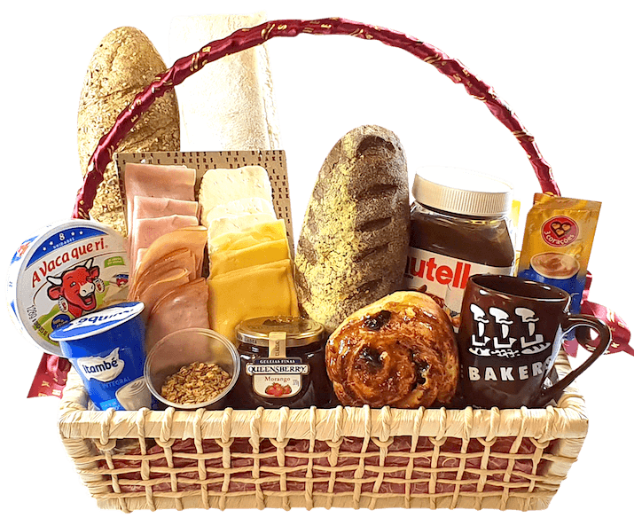

Sobre as Cestas da Bom dia & Compania
Enviar uma cesta de café da manhã para alguém é muito mais que presentear uma pessoa querida. É um gesto de carinho de quando se dá um presente sem esperar nada em troca. Cestas de café da manhã exprimem o nosso sentimento para quem amamos, além de serem um símbolo de afeto. Seja uma cesta de chocolate ou uma cesta de flores, a entrega de cestas transforma o dia de quem as recebe. Presentear uma pessoa especial com uma cesta de frutas para o café da manhã trará sentimentos bons e felizes e ficará marcado na memória de ambos para sempre. Nada é mais prazeroso do que agradar aqueles que amamos. Assim, dar uma cesta de café da manhã – com flores, pães, sucos, frutas e animais de pelúcia – pode ser uma experiência única, especial e inesquecível.
Nosso estabelecimento
Nosso estabelecimento está bem perto de você.